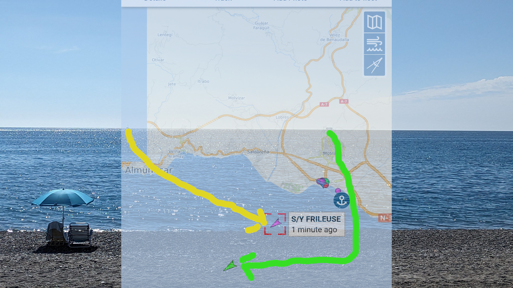

Cómo seguir al crucero de tus sueños
jjmerelo,

JJ
Padre orgulloso
Veneciófilo
¿Cuál es el barco de tus sueños?
Siguelo

¿Como comienza un proyecto de software libre?
Preguntándole a ChatGPT
🤖: "Búscate la vida"
# Replace API_URL with the URL of the API that provides information about the harbor
api_url = f'https://example.com/api/harbors/{harbor_code}/ship-info?key={api_key}'
# Make an HTTP request to the API to obtain information about ship arrivals and departures
response = requests.get(api_url)
ship_info = response.json()

Hoy: VesselFinder
Automatic identification of ships lo sabe
No sin mi API
Un torrente:
AISStream
¡Usemos
Python
deno
Node.js!
deno
Escuchando el Mediterráneo
const socket = new WebSocket("wss://stream.aisstream.io/v0/stream");
// Lee BoundingBoxes de un fichero...
socket.addEventListener("open", (_) => {
const subscriptionMessage = {
APIkey: API_KEY,
BoundingBoxes: boundingBoxes, // [ [ [46, -10], [30, 30] ] ]
};
socket.send(JSON.stringify(subscriptionMessage));
}); Mensaje recibido
{
Message: {
PositionReport: {
Cog: 116.2,
CommunicationState: 59916,
Latitude: 38.035088333333334,
Longitude: 23.55172333333333,
MessageID: 1,
NavigationalStatus: 0,
PositionAccuracy: true,
Raim: false,
RateOfTurn: -128,
RepeatIndicator: 0,
Sog: 0,
Spare: 0,
SpecialManoeuvreIndicator: 0,
Timestamp: 34,
TrueHeading: 511,
UserID: 237128700,
Valid: true
}
},
MessageType: 'PositionReport',
MetaData: {
MMSI: 237128700,
MMSI_String: 237128700,
ShipName: 'MARIA T',
latitude: 38.035088333333334,
longitude: 23.55172333333333,
time_utc: '2023-10-13 15:44:34.571915913 +0000 UTC'
}
}